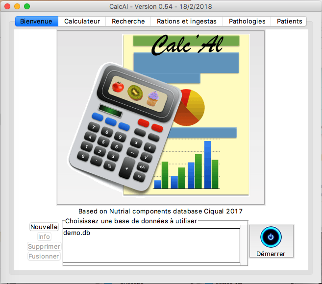
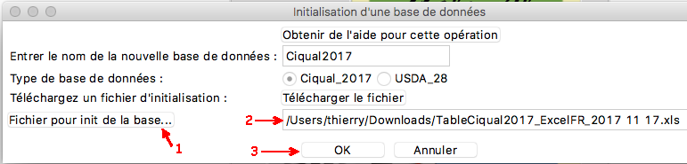

CalcAl utilisation
CalcAl utilisation
Lancement de CalcAl
Comme indiqué dans la partie installation
: sous Windows ou Mac, double-cliquez sur l'icône de l'application,
sous Linux sur le script Calcal.sh.
La page de bienvenue de CalcAl apparait.

Pour le fonctionnement en réseau, voir le chapitre concerné du manuel de maintenance.
Fenêtre à propos
L'option A propos... du menu ? ou un clic
sur les bandeaux en haut des fenêtres, vous affichez la fenetre
suivante :
Vous y trouverez des informations concernant le CalcAl, votre système,
les adresses mail et photos des concepteurs.
Documentation
La documentation du projet est accessible par le menu ? et son option Documentation de l'interface graphique.

Un onglet s'ouvre alors dans votre navigateur Internet actuel.
Import des bases de données
Par défaut, vous ne disposez que d'une base de données de démonstration
appelée "demo". Cette base ne contient que les aliments moyens
issus de la base Ciqual 2017.
Pour disposer de données plus récentes et plus nombreuses, importez une
base de l'ANSES
et/ou de l'USDA.
Cliquez sur Le bouton nouvelle :
La fenêtre d'import apparait :
Pour importer la base Ciqual 2017 :
Entrer le nom de votre base, par exemple : Ciqual 2017
Choisissez le Type de base : Ciqual_2017
Cliquez sur le bouton Copier le lien WEB dans le presse-papier
Une fenêtre apparait et vous donne des consignes pour télécharger la
base depuis le site de l'ANSES avec votre navigateur WEB :
Télécharger la base comme indiqué avec votre navigateur Internet à
l'URL :
https://ciqual.anses.fr/#/cms/telechargement/node/20 :
Téléchargez le données brutes sous le nom proposé : TableCiqual2017_ExcelFR_2017 11 17.xls
Dans CalcAl, cliquez sur le bouton Fichier pour init de la base
(1) pour sélectionner le fichier que vous venez de télécharger, le nom
du fichier choisis s'affiche (2) :

Cliquez sur le bouton OK (3).
La base apparait alors dans la liste des bases disponibles :
Répéter les étapes suivantes pour la base USDA.
Fusion de bases
La fusion de base permet d'ajouter à une base de référence les aliments
contenus dans une 2ème base.
Les aliment de la base de référence sont prioritaires sauf en cas de
mise à jour explicite.
Importez deux bases et sélectionnez la base de référence et cliquez sur
Fusionner :
Complétez la fenêtre de fusion et validez :


Le bouton Info résume le contenu de la base :
Utiliser l'onglet
calculateur
Dans l'onglet Bienvenue, choisissez la base à utiliser (1) et
cliquez le bouton Démarrer (2) :
L'onglet Calculateur apparait :
Le cadre Recherche d'aliment vous permet de trouver
facilement des aliments si vous tapez dans la boîte d'entrée Nom :
Tous les aliments contenant sou dans leur nom sont affichés.
En cas de recherche infructueuse, le bouton + élargit la recherche.
Cliquez sur un aliment pour l'envoyer dans le Cadre de Définition d'un
aliment :
Remplissez la Quantité en g (1) et appuyez sur Entrée ou sur la
flèche
verte (2). L'alimant apparait dans la liste (3) :
Vous pouvez sélectionner un ou plusieurs composants (Clic + Shift ou
Control) :
Selectionnez d'autres aliments :
Les entêtes du tableau sont des boutons permettant : pour a première Nom
sert à sélectionner tout le tableau, les autres servent à trier les
lignes selon les valeurs des colonnes.
Le tableau des énergies indique leur répartition par composant :
Créer un groupe d'aliment
Dans l'onglet Calculateur,
créez une liste d'aliments et sélectionnez les lignes correspondant à
celle de votre recette (1).
Cliquez sur le bouton grouper... (2) ou le menu Sélection
/
Grouper :
Dans la fenêtre Sauvegarder ce groupe d'aliments, dénissez une
famille existante ou non. Toutes les zones sont actives. Donner un nom
au groupe, puis cliquez sur le bouton OK :
Ce nouvel aliment utilisateur est sauvé, il remplace ses constituants
dans la liste et peut se trouver facilement dans les boîtes de
recherche et de définition.
Vous pouvez à tous moments rappeler, dégrouper ou avoir des infos sur
un groupe que vous avez créé comme pour les autres aliments :
Rechercher les
aliments selon des critères
Vous devez d'abord avoir choisi
une base de données active.
L'onglet Recherche vous permet de sélectionner des aliments
selon des
filtres sur leurs composants :
Vous pouvez trier une colonne en cliquant sur son entête.
Définir une pathologie
Vous devez d'abord avoir choisi une
base de données active.
L'onglet Pathologies, vous permet de définir ou modifier les
pathologies qui peuvent affecter les patients et de définir des
composants à suivre pour chaque affection.
Définir les données pour un patient
Vous devez d'abord avoir choisi une
base de données active.
L'onglet Patients, vous permet de définir ou modifier les
données de suivi pour vos patients.
Sauver une ration ou
un ingestat
Déninissez dans l'onglet
Calculateur, la liste des aliments composant cette ration ou cet
ingestat.
Et cliquez sur le bouton Sauver la ration... ou choisissez le
menu Selection/Sauver la ration...
La fenêtre de définition de ration ou d'ingestat apparait, vous
renseignez les champs et vous sauvez.
A tout moment l'onglet Rations et ingestats vous permet de les gérer,
et de les afficher à nouveau dans l'onglet Calculateur.
Exporter des données
Dans plusieurs endroits de CalcAl vous pouvez copier des données dans
le Presse-papier avec le menu Selection/Presse-papier ou des boutons
Presse_papier.
Les données sont prêtes à être collées dans un fichier texte ou dans un
tableur par exemple. Elles sont au format CSV :
Après copie dans un éditeur de texte et sauvegarde dans test.csv :
Après ouverture de ce fichier test.csv dans OpenOffice/Calc :
Localisation de vos données et des
messages de l'application
Vos données sont stokées dans votre répertoire utilisateur dans le sous-dossier CalcAl_data
:

- Le sous-répertoire databases contient vos bases de
données ;
- Le sous-répertoire log héberge les historiques cycliques
et datés de CalcAl.
Extrait d'un fichier de log :
2017-01-22 18:20:12,605 :: INFO :: Démarrage CalcAl.py : CalcAl - version 0.48 du 14/1/2017
2017-01-22 18:20:12,610 :: INFO :: Merci à vous thierry d'utiliser ce logiciel !
2017-01-22 18:20:12,610 :: INFO :: Pour contacter les auteurs : Thierry.Maillard500@orange.fr, Perrine.Maillard2@gmail.com
2017-01-22 18:20:12,610 :: INFO :: Sur : Darwin, 16.3.0, Python : 3.5.1, Tk : 8.5
2017-01-22 18:20:12,610 :: INFO :: Langue et encodage détectés sur cet ordinateur = ('fr_FR', 'UTF-8')
2017-01-22 18:20:13,635 :: INFO :: Démarrage de l'IHM...
2017-01-22 18:20:13,870 :: INFO :: Onglet Bienvenue activé.
2017-01-22 18:22:05,239 :: INFO :: c16.db choisie
2017-01-22 18:22:07,041 :: INFO :: c16.db choisie
2017-01-22 18:22:09,482 :: INFO :: demo.db choisie
2017-01-22 18:22:10,826 :: INFO :: c16.db choisie
2017-01-22 18:22:14,955 :: INFO :: DatabaseManager/deleteDatabase() : database deleted : c16.db
2017-01-22 18:22:14,956 :: INFO :: Base de données : c16.db détruite
Licences des bases de données
Base Ciqual
Lorsque vous utilisez les données de la base Ciqual, vous devez mentionner dans vos rapports et documents :
Les données et les informations présentes sont mises à disposition
du public par l'Agence nationale de sécurité sanitaire de
l'alimentation, de l'environnement et du travail (Anses). Elles ne
peuvent être reproduites de quelque manière que ce soit sans référence
explicite à la source :
"Table de composition nutritionnelle des aliments Ciqual (année
mentionnée sur le bandeau du site internet au moment de la
consultation)" .
Base USDA
US Department of Agriculture, Agricultural, Research Service, Nutrient Data Laboratory.
USDA National Nutrient Database for Standard Reference, Release 28 (Slightly revised).
Version Current: May 2016. Internet: http://www.ars.usda.gov/ba/bhnrc/ndl
Chapitre précédent : Installation
-
Chapitre suivant : Maintenance
Copyleft (c) 2018 - Perrine et Thierry
Maillard
Vous avez la permission de copier, distribuer ou modifier ce document
selon les termes de la licence GNU de documentation libre, dans sa
version 1.3 ou dans toute version ultérieure publiée par la Free
Software Foundation ; sans Section Invariante, sans Texte De Première
De Couverture, et sansTexte De Quatrième De Couverture.
Une copie de cette licence est incluse dans la section intitulée
"Licence GNU de documentation libre" : GNU Free Documentation
License.
Une copie de cette Licence est incluse dans le fichier gfdl.1.3-js.fr.html